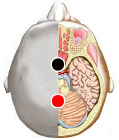

Adicciones
cuerpo calloso - cuerpo calloso*
occipital - occipital
polo - tiroides
ombligo - ombligo

* Nota: Este par también puede responder como Prepineal-Postpineal
Generalidades:
Las adicciones son hábitos obsesivo compulsivos y autodestructivos que afectan a millones de personas en el mundo. Por principio pensamos en la adicción a sustancias como el alcohol (alcoholismo), tabaco (tabaquismo), mariguana, cocaína, heroína y muchas otras drogas. Pero también existe adicción al sexo, a la comida (polifagia) al juego de apuestas o a decir mentiras (mitomanía). En cualquier caso la vida de quien sufre una adicción se ve seriamente afectada en los planos físico, mental, emocional y espiritual; muchas veces afectando a familiares y personas cercanas. La adicción a las drogas puede llevar a la muerte.
Los grupos de Alcohólicos Anónimos "AA" tienen presencia a nivel mundial. Brindan apoyo gratuito a todas aquellas personas que tengan un deseo de superar la adicción a las drogas, ya sea el alcohol, marihuana, cocaína, etc. Su programa está basado en la autoayuda y el apoyo espiritual, es el Programa de los 12 pasos. También existen grupos especializados en ayuda a comedores compulsivos, fumadores compulsivos, sexoadictos, entre otros.
Temas relacionados: